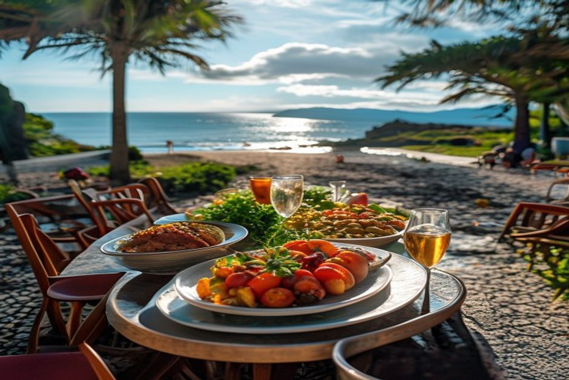
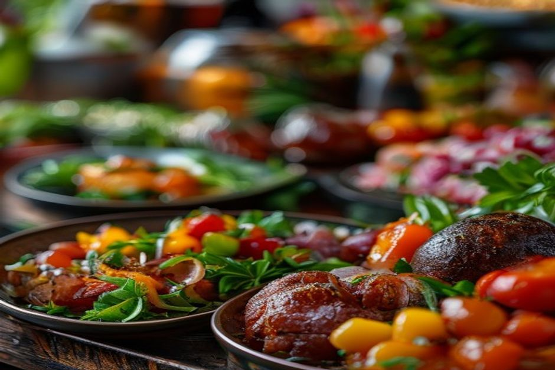

Every summer, the fishing town of Machico turns its seafront into Madeira's biggest open-air food fair. Here's when the 2026 edition runs, what's actually on the menu, what's new this year, and whether it's worth the drive from Funchal.
When is Machico Gastronomic Week 2026?
The 39th Semana Gastronómica de Machico runs from Thursday 31 July to Sunday 9 August 2026 — ten days on the seafront in Machico, on Madeira's east coast. Organised each year by Machico's Câmara Municipal, it's one of the island's longest-running food events, predating most of the food-tourism attention Madeira gets today, and it opens on the evening of 31 July.

What is Machico Gastronomic Week, exactly?
It's an open-air food fair, not a ticketed festival. Local restaurants, bars and community associations set up stalls along Machico's seafront, near the Forte de Nossa Senhora do Amparo, each serving a short menu of regional dishes rather than full table service. The format rewards grazing — a plate of one thing here, a glass of something there — over committing to a single restaurant for the whole evening.
What food will you actually find there?
The lineup leans hard into Machico's identity as a fishing town: chopped octopus, horse mackerel, dried skipjack tuna and marinated tuna sit alongside limpets, espetada, bolo do caco and carne vinha d'alhos. It's a broader, more coastal spread than you'll typically find on a single Funchal restaurant menu, since each stall specialises in one or two dishes rather than a full à la carte list.
What's new for the 2026 edition?
The organisers have added a "10 Days, 10 Chefs" programme — a different chef each day builds an exclusive menu drawing on Madeiran and Porto Santo cuisine, alongside a cocktail festival and live cooking demonstrations running through the ten days. It's a step up from the usual stall format, giving repeat visitors a reason to come back more than once during the fortnight.

What's the entertainment like in the evenings?
Music runs most nights: concerts from Portuguese artists, folklore groups and DJs performing along the seafront as the stalls fill up. It's a family-friendly, come-and-go event rather than a fixed-seating concert — most people wander between food, drink and music rather than staying in one spot all evening.
How do you get to Machico from Funchal?
It's about 25 minutes' drive east of Funchal, along the VE1/ER101, or a short taxi ride if you're not driving. During the event, Machico's Câmara Municipal also runs free shuttle buses from the parishes of Caniçal, Água de Pena and Porto da Cruz, so it's worth checking the municipal calendar (agenda.cm-machico.pt) closer to your visit if you're staying further east on the island.
Is it worth pairing with a day on the water?
Yes, if you're staying near Funchal. Machico sits on the opposite side of the island from the marina where Chifbay's boats depart, so the two don't overlap — which makes for a good full day: a private boat trip from Funchal Marina in the afternoon, covering Cabo Girão, hidden coves or a chance of dolphins, then the 25-minute drive east for dinner and music on Machico's seafront once the sun's down. Sea by day, feast by night.
Ten days, one seafront, and a menu built from everything Machico's fishermen and cooks do best.
If you're on the island between 31 July and 9 August 2026, Machico Gastronomic Week is worth an evening — arrive hungry, graze between stalls, and don't rush it.